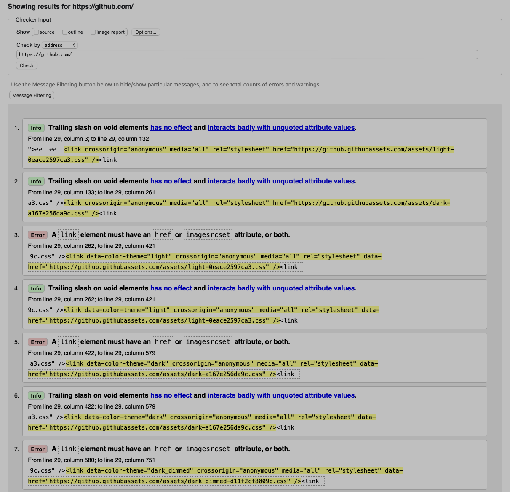
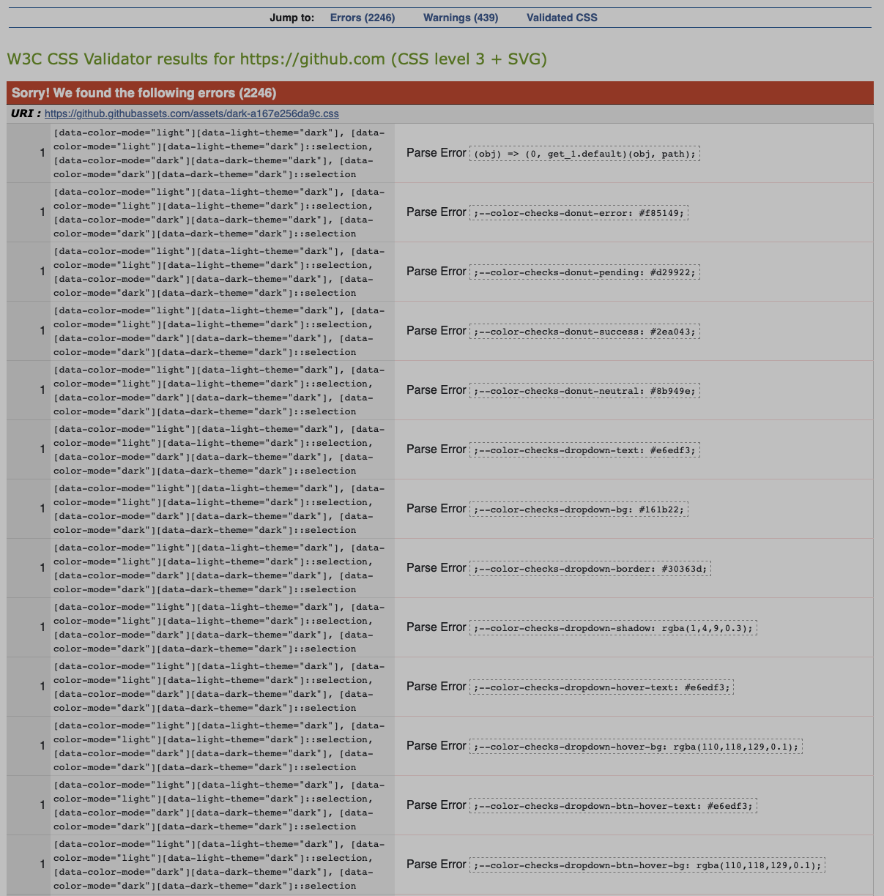
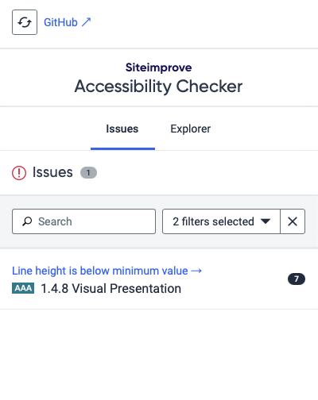

| Assessment criteria | PASS / FAIL | Screenshot of results |
| Website passes the W3C validator | FAIL Recommendations: 1. For the issue of having a value in a meta tag, change the meta content using 'setMetaTagContent' in a JS or TS script instead of HTML. 2. For the error of a div inside a span, change the type of element from a div to antother span. |
 |
| Website passes CSS validator | FAIL Recommendations: 1. .dragger-icon padding-right has a negative padding of -8px, which defaults to 0. Either change to 0px or use padding-left 8. 2 .graphs, .selection, .overlay contain a visibility tag that is set to none, which is not a value of visibility. Either use hidden, or change to display: none |
 |
| Website status using SiteImprove | PASS-ish Recommendation: Increase line height to at least 1.5 times the font size. |
 |